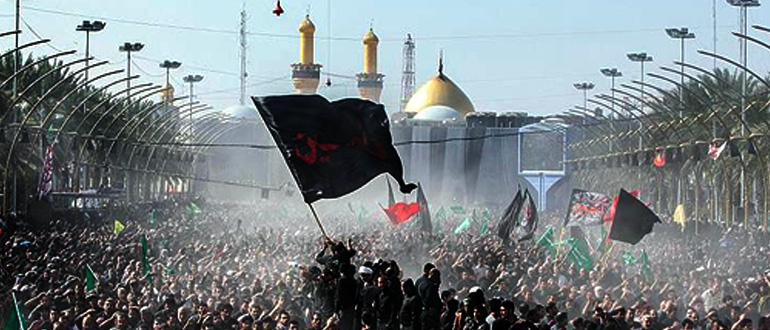

जुलूस का परिचय:
हमारी जुलूस में सभी का स्वागत है क्योंकि हम 48 किलोमीटर की दूरी तय करते हुए स्मरण और एकजुटता की यात्रा पर निकल रहे हैं। आज, हम न केवल इस भौतिक दूरी को पार करने के लिए बल्कि इतिहास के इतिहास को पार करने के लिए, एक श्रद्धेय व्यक्ति, इमाम हुसैन की स्मृति का सम्मान करने के लिए भी एकत्र हुए हैं।
जुलूस का महत्व:
हमारी जुलूस का गहरा महत्व है क्योंकि यह इमाम हुसैन की कालजयी विरासत को मनाने के लिए एक मंच के रूप में कार्य करती है, एक ऐसी शख्सियत जिनका जीवन और बलिदान दुनिया भर में लाखों लोगों को प्रेरित करता है। जैसे-जैसे हम आगे बढ़ रहे हैं, आइए हम इमाम हुसैन द्वारा प्रस्तुत साहस, न्याय और बलिदान के मूल्यों पर विचार करें, जो आज भी उतने ही प्रासंगिक हैं जितने सदियों पहले थे।
इमाम हुसैन कौन थे:
पैगंबर मुहम्मद के पोते इमाम हुसैन इब्न अली लचीलेपन और धार्मिकता के प्रतीक के रूप में खड़े हैं। अत्याचार और उत्पीड़न के सामने सत्य और न्याय के प्रति उनकी अटूट प्रतिबद्धता मानवता के लिए प्रकाश की किरण के रूप में कार्य करती है। अन्याय के खिलाफ इमाम हुसैन का सैद्धांतिक रुख, जिसकी परिणति कर्बला की लड़ाई में उनकी शहादत के रूप में हुई, अत्याचार के खिलाफ प्रतिरोध और न्याय और गरिमा के सिद्धांतों को बनाए रखने के आह्वान का प्रतीक बना हुआ है।
हम उनकी स्मृति का सम्मान करने के लिए क्यों एकत्रित होते हैं:
हम आज यहां केवल एक जुलूस में भाग लेने वालों के रूप में नहीं, बल्कि इमाम हुसैन के आशा और लचीलेपन के संदेश के मशाल वाहक के रूप में एकत्र हुए हैं। उनका बलिदान समय और स्थान से परे, सभी पृष्ठभूमि और विश्वासों के लोगों के साथ गूंजता है। इमाम हुसैन की स्मृति का सम्मान करते हुए, हम सभी प्रकार के उत्पीड़न और अन्याय के खिलाफ खड़े होने की अपनी प्रतिबद्धता की पुष्टि करते हैं।
ऐतिहासिक संदर्भ:
वंश और पालन-पोषण:
इमाम हुसैन इब्न अली का जन्म 626 ईस्वी में हुआ था, वह इमाम अली इब्न अबी तालिब और पैगंबर मुहम्मद की बेटी फातिमा के दूसरे बेटे थे। अहल अल-बैत (पैगंबर के घराने) के सदस्य के रूप में, इमाम हुसैन का पालन-पोषण धर्मपरायणता, ज्ञान और इस्लाम के प्रति समर्पण से भरे माहौल में हुआ था। उनके पालन-पोषण ने उनमें धार्मिकता और करुणा की गहरी भावना पैदा की, ऐसे गुण जो जीवन भर उनके चरित्र को परिभाषित करेंगे।
कर्बला की त्रासदी की ओर ले जाने वाली घटनाएँ:

कर्बला की त्रासदी 632 ईस्वी में पैगंबर मुहम्मद की मृत्यु के बाद मुस्लिम समुदाय के भीतर सत्ता संघर्ष की पृष्ठभूमि में सामने आई। इमाम हुसैन ने खुद को इस उथल-पुथल भरे दौर के केंद्र में पाया क्योंकि सत्तारूढ़ उमय्यद वंश और पैगंबर के परिवार के समर्थकों के बीच तनाव बढ़ गया था।
680 ईस्वी में, इमाम हुसैन को कुफ़ा (वर्तमान इराक में) के लोगों से मदद के लिए कई अपीलें मिलीं, जिन्होंने उमय्यद ख़लीफ़ा, यज़ीद इब्न मुआविया के अत्याचारी शासन को उखाड़ फेंकने की मांग की थी। उनकी दलीलों का जवाब देते हुए, इमाम हुसैन अपने परिवार और साथियों के साथ कुफ़ा की यात्रा पर निकल पड़े। हालाँकि, कर्बला पहुँचने पर, उन्हें यज़ीद की सेना ने रोक लिया।
कर्बला की त्रासदी:
इमाम हुसैन ने भारी संख्या में होने के बावजूद, यज़ीद के प्रति निष्ठा की प्रतिज्ञा करने से इनकार कर दिया और इसके बजाय न्याय और गरिमा के सिद्धांतों को बनाए रखने का विकल्प चुना। मुहर्रम की 10वीं तारीख को, जिसे आशूरा के नाम से जाना जाता है, इमाम हुसैन और उनके अनुयायियों को यज़ीद की सेना के क्रूर हमले का सामना करना पड़ा। प्यास, भूख और लगातार हमलों को सहने के बावजूद, इमाम हुसैन और उनके वफादार साथी सच्चाई और धार्मिकता के प्रति अपनी प्रतिबद्धता पर दृढ़ रहे।

यह त्रासदी इमाम हुसैन और उनके परिवार के सदस्यों की शहादत के साथ अपने चरम पर पहुंच गई, जिसमें उनके नवजात बेटे अली अल-असगर भी शामिल थे, जिनका गला एक तीर से दुखद रूप से छेदा गया था। कर्बला की घटनाएँ इस्लामी इतिहास में एक महत्वपूर्ण क्षण का प्रतिनिधित्व करती हैं, जो उत्पीड़न और न्याय, अत्याचार और धार्मिकता के बीच संघर्ष का प्रतीक है।
कर्बला की लड़ाई:
कर्बला की लड़ाई मुहर्रम की 10वीं तारीख, 680 ईस्वी (61 हिजरी) को वर्तमान इराक में फरात नदी के तट के पास हुई थी। यह इस्लामी इतिहास में एक महत्वपूर्ण क्षण था और इमाम हुसैन के अनुयायियों के लिए एक निर्णायक क्षण था।
इमाम हुसैन का रुख:
इमाम हुसैन, अपने परिवार के सदस्यों और वफादार अनुयायियों के एक छोटे समूह के साथ, खुद को उमय्यद ख़लीफ़ा यज़ीद इब्न मुआविया की विशाल सेना से घिरा हुआ पाया। अपने विरुद्ध खड़ी बाधाओं को जानने के बावजूद, इमाम हुसैन ने यज़ीद के अत्याचारी शासन के आगे झुकने से इनकार कर दिया और इसके बजाय न्याय, गरिमा और उत्पीड़न के खिलाफ प्रतिरोध के सिद्धांतों को बनाए रखने का विकल्प चुना।
इमाम हुसैन के परिवार का बलिदान:
इमाम हुसैन के परिवार के सदस्यों, जिनमें उनके प्यारे भाई अब्बास, उनके बेटे अली अकबर और अली असगर और उनकी बहन ज़ैनब शामिल थे, ने प्रतिकूल परिस्थितियों का सामना करने में अटूट साहस और लचीलापन दिखाया। अपनी अटूट वफादारी के लिए जाने जाने वाले अब्बास ने अपनी आखिरी सांस तक बहादुरी से इमाम हुसैन के शिविर की रक्षा की। इमाम हुसैन के सबसे बड़े बेटे अली अकबर ने अपने दादा अली इब्न अबी तालिब की वीरता को दोहराते हुए युद्ध के मैदान में बहादुरी से लड़ाई लड़ी। अली असगर, मात्र एक शिशु, मासूमियत और बलिदान का प्रतीक बन गया, जिसने दुखद रूप से एक भटके हुए तीर से अपनी जान गंवा दी।
इमाम हुसैन के साथियों का बलिदान:
इमाम हुसैन के साथी, जिनकी संख्या सत्तर से अधिक नहीं थी, अटूट निष्ठा और भक्ति के साथ उनके साथ खड़े रहे। उनमें से प्रत्येक ने अपने विरुद्ध भारी बाधाओं की परवाह किए बिना, सत्य और न्याय की रक्षा में स्वेच्छा से अपने जीवन का बलिदान दिया। उनकी निस्वार्थता और दृढ़ संकल्प आने वाली पीढ़ियों के लिए साहस और बलिदान का एक कालातीत उदाहरण है।
इमाम हुसैन की शहादत:
कर्बला की लड़ाई की अराजकता के बीच, इमाम हुसैन हर तरफ से दुश्मनों से घिरे हुए अकेले खड़े थे। अपनी विकट परिस्थितियों के बावजूद, अपनी सहायता के लिए कोई अतिरिक्त बल न होने के बावजूद, उन्होंने बहादुरी से अकेले ही हजारों विरोधियों का सामना किया। तीन कष्टदायक दिनों तक, उन्होंने प्यास, भूख और थकावट की पीड़ा सहन की, फिर भी उनका संकल्प कभी नहीं डिगा।
अंतिम क्षणों में, जैसे ही लड़ाई की तीव्रता अपने चरम पर पहुंच गई, इमाम हुसैन ने खुद को अलग-थलग पाया, उनका समर्थन करने वाला कोई नहीं बचा था। उनके वफादार साथी और परिवार के सदस्य एक-एक करके गिर गए थे। दुःख के बोझ और अपने प्यारे बेटों, भतीजों, भाइयों और दोस्तों के बेजान रूपों को उठाने के बोझ के बावजूद, इमाम हुसैन बेजोड़ साहस और दृढ़ संकल्प के साथ लड़ते रहे।
अत्याचार और उत्पीड़न के खिलाफ उनका एकान्त रुख सत्य और न्याय के सिद्धांतों के प्रति अटूट प्रतिबद्धता का एक गहरा उदाहरण है। भारी बाधाओं और अकल्पनीय पीड़ा के सामने भी, इमाम हुसैन अन्याय के सामने झुकने से इनकार करते हुए दृढ़ रहे। उनका बलिदान सम्मान और स्वतंत्रता के लिए शाश्वत संघर्ष का प्रतीक है, जो आने वाली पीढ़ियों को उत्पीड़न का विरोध करने और धार्मिकता और करुणा के मूल्यों को बनाए रखने के लिए प्रेरित करता है।
कर्बला की लड़ाई इमाम हुसैन, उनके परिवार और उनके साथियों की अदम्य भावना के प्रमाण के रूप में खड़ी है, जिन्होंने सच्चाई और न्याय के लिए अपना सब कुछ बलिदान करने का फैसला किया। उनका महान बलिदान अनगिनत व्यक्तियों को सभी प्रकार के उत्पीड़न और अत्याचार के खिलाफ खड़े होने के लिए प्रेरित करता रहता है।
इमाम हुसैन के रुख के पीछे उद्देश्य:
इमाम हुसैन का प्राथमिक उद्देश्य न्याय और धार्मिकता के सिद्धांतों को कायम रखना था, जो इस्लामी शिक्षाओं के मूल में हैं। उन्होंने माना कि अत्याचार और उत्पीड़न के आगे समर्पण इन मूलभूत मूल्यों से समझौता करेगा, जिससे समाज के नैतिक ताने-बाने का क्षरण होगा। अन्याय के खिलाफ दृढ़ता से खड़े होकर, इमाम हुसैन ने इस्लामी सिद्धांतों की अखंडता को बनाए रखने और दूसरों को इसके सभी रूपों में अत्याचार का विरोध करने के लिए प्रेरित करने का प्रयास किया।
पैगंबर मुहम्मद के पोते के रूप में इमाम हुसैन को अपने दादा की विरासत की रक्षा करने की गहरी जिम्मेदारी महसूस हुई। उन्होंने समझा कि यजीद के दमनकारी शासन को स्वीकार करना पैगंबर की शिक्षाओं के साथ विश्वासघात होगा, जो करुणा, दया और न्याय की वकालत करते थे। कर्बला में इमाम हुसैन का रुख, शासक अभिजात वर्ग के भ्रष्टाचार और अत्याचार से बेदाग, इस्लाम के वास्तविक सार को संरक्षित करने की उनकी प्रतिबद्धता का एक प्रमाण था।

इमाम हुसैन का यज़ीद के प्रति निष्ठा की प्रतिज्ञा से इनकार करना अत्याचार और उत्पीड़न के खिलाफ प्रतिरोध का एक अपमानजनक कार्य था। उन्होंने माना कि अन्यायी शासकों के प्रति समर्पण उन्हें अपने अत्याचारी शासन को जारी रखने के लिए प्रोत्साहित करेगा, जिससे लोगों पर और अधिक अत्याचार और पीड़ा होगी। यज़ीद की सेना का डटकर मुकाबला करके, इमाम हुसैन ने प्रदर्शित किया कि व्यक्तिगत लागत की परवाह किए बिना, अत्याचार के खिलाफ प्रतिरोध एक पवित्र कर्तव्य है।
कर्बला में इमाम हुसैन का रुख केवल एक ऐतिहासिक घटना नहीं थी बल्कि साहस, लचीलेपन और बलिदान का एक कालातीत उदाहरण था। विपरीत परिस्थितियों में उनकी दृढ़ता, परिणामों की परवाह किए बिना, पीढ़ियों तक लोगों को अन्याय और उत्पीड़न के खिलाफ खड़े होने के लिए प्रेरित करती रहती है। इमाम हुसैन का संदेश समय और स्थान से परे है, सभी पृष्ठभूमि और विश्वासों के लोगों के साथ गूंजता है, और उत्पीड़ितों और वंचितों के लिए आशा की किरण के रूप में काम करता है।
कर्बला में इमाम हुसैन की शहादत ने अत्याचार और उत्पीड़न के खिलाफ प्रतिरोध की एक स्थायी विरासत स्थापित की। उनके बलिदान ने भावी पीढ़ियों को साहस और दृढ़ संकल्प के साथ अन्याय का सामना करने के लिए प्रेरित किया, जिससे प्रतिरोध की परंपरा को बढ़ावा मिला जो आज तक कायम है। इमाम हुसैन की स्मृति एक अनुस्मारक के रूप में कार्य करती है कि न्याय के लिए संघर्ष एक सतत प्रयास है, जिसके लिए अटूट प्रतिबद्धता, बलिदान और दृढ़ता की आवश्यकता होती है।
उत्पीड़न और अत्याचार के खिलाफ इमाम हुसैन का रुख कर्तव्य की गहरी भावना, न्याय, धार्मिकता के सिद्धांतों और अन्याय के साथ समझौता करने से इनकार करने से प्रेरित था। उनकी विरासत दुनिया भर में लाखों लोगों को उत्पीड़न और अत्याचार के सभी रूपों के खिलाफ खड़े होने के लिए प्रेरित करती रहती है।

Imam Husain's patience and steadfastness in the face of adversity serve as exemplary virtues that continue to inspire countless individuals.
1. Patience in the Face of Trials:
Despite facing numerous trials and tribulations, Imam Husain remained remarkably patient and composed. Anecdotes from the Battle of Karbala depict his unwavering resolve even in the most challenging circumstances. Despite the scorching desert heat and the scarcity of water, Imam Husain maintained his composure and patience, setting an example of fortitude and resilience for his followers.
2. Steadfastness in the Pursuit of Justice:
Imam Husain's unwavering resolve in the pursuit of justice is exemplified by his refusal to compromise with tyranny and oppression. Despite knowing the grave risks involved, he remained steadfast in his commitment to upholding the principles of righteousness and truth. His famous quote, "I only desire to spread good values and prevent evil," reflects his unwavering resolve to stand up for what is right, regardless of the consequences.
3. Endurance in the Face of Adversity:
Throughout the ordeal of Karbala, Imam Husain demonstrated remarkable endurance and resilience. Despite the overwhelming odds stacked against him, he never wavered in his determination to confront oppression and uphold the dignity of his cause. His patience and endurance serve as a source of inspiration for all those facing adversity, reminding them of the power of resilience and determination in the face of seemingly insurmountable challenges.
4. Forgiveness and Compassion:
Even in the midst of tragedy, Imam Husain displayed remarkable forgiveness and compassion towards his adversaries. Despite the betrayal and violence inflicted upon him and his family, he urged his followers to refrain from seeking revenge and instead embrace forgiveness and compassion. His famous quote,"Do you think that forgiveness is a sign of weakness? It is the attribute of the strong," encapsulates his belief in the transformative power of forgiveness and compassion.
5. Faith and Trust in the Divine Will:
Imam Husain's unwavering faith and trust in the divine will sustained him throughout his trials and tribulations. Despite the tragic outcome of the Battle of Karbala, he remained steadfast in his belief that his sacrifice was part of a greater divine plan. His famous words, "If the religion of Muhammad was not going to live except with my martyrdom, O swords, take me," reflect his profound faith and acceptance of his destiny.
Imam Husain's patience, perseverance, and unwavering resolve serve as timeless examples of courage and resilience in the face of adversity. His legacy continues to inspire millions around the world to uphold the values of justice, compassion, and forgiveness, even in the most challenging circumstances.
Imam Husain's unwavering stand against injustice underscores the importance of speaking out and taking action against oppression and tyranny. His refusal to submit to the unjust rule of Yazid serves as a reminder that silence in the face of injustice only perpetuates it. Imam Husain teaches us that it is our moral duty to stand up for what is right, even if it means standing alone against overwhelming odds.

Throughout his trials and tribulations, Imam Husain maintained unwavering faith and trust in the divine will. His steadfastness in the face of adversity reminds us of the importance of maintaining faith and seeking solace in times of difficulty. Imam Husain's example teaches us that faith provides the strength and resilience needed to endure life's challenges with patience and grace.
Imam Husain's selfless sacrifice at Karbala exemplifies the highest form of altruism and selflessness. He willingly laid down his life for the greater good, prioritizing the well-being of others over his own safety and comfort. Imam Husain's example teaches us that true greatness lies in selfless service to others and that acts of sacrifice have the power to inspire and uplift humanity.
Imam Husain's unwavering commitment to upholding principles of justice, righteousness, and dignity serves as a beacon of integrity and moral courage. His refusal to compromise his values, even in the face of immense pressure, highlights the importance of living with integrity and staying true to one's convictions. Imam Husain teaches us that it is better to die with honor than to live with shame.
Imam Husain's legacy continues to inspire hope and resilience in the face of adversity. His courage and sacrifice serve as a source of strength for all those facing oppression and injustice. Imam Husain teaches us that even in the darkest of times, there is always hope, and that through courage and perseverance, we can overcome any challenge.
Imam Husain's life and sacrifice offer timeless lessons of courage, faith, selflessness, and integrity. His legacy continues to inspire millions around the world to strive for justice, uphold their principles with integrity, and embrace the power of selfless service to humanity.
Relevance Today:
Imam Husain's stand against tyranny resonates with contemporary struggles against oppression, whether it's authoritarian regimes, systemic injustice, or human rights abuses.
Imam Husain's emphasis on justice and equality is relevant in addressing modern-day issues such as socioeconomic disparities, discrimination, and marginalization.
Imam Husain's message of compassion and inclusivity promotes dialogue and understanding among people of different faiths, fostering harmony in an increasingly diverse world.
Imam Husain's selfless sacrifice inspires individuals and organizations to engage in humanitarian efforts, providing aid and support to those in need regardless of background or belief.
Imam Husain's leadership style, characterized by integrity, humility, and service to others, offers valuable lessons for contemporary leaders striving to create positive change with moral authority.
Imam Husain's resilience in the face of adversity serves as a source of hope and inspiration for individuals and communities confronting challenges such as conflict, displacement, and natural disasters.

Join the Movement: Spread the Message of Imam Husain
Your voice matters, and your actions can make a difference. Here's how you can participate in spreading the timeless message of Imam Husain and his legacy of justice, compassion, and resilience:
Remember, every small action counts. By participating in spreading the message of Imam Husain, you contribute to a global movement of justice, compassion, and resilience. Together, we can honor his memory and strive to create a more just and equitable world for all.